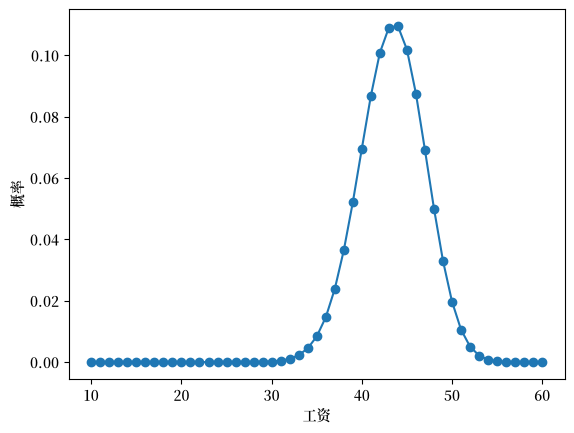
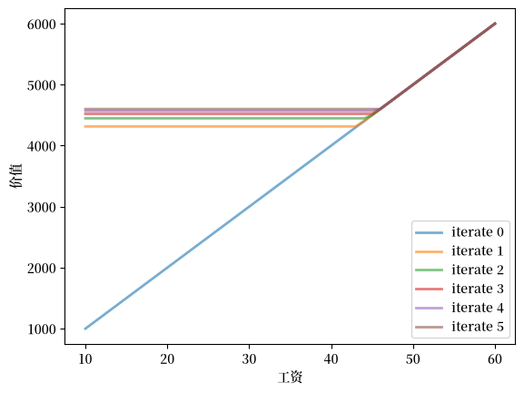
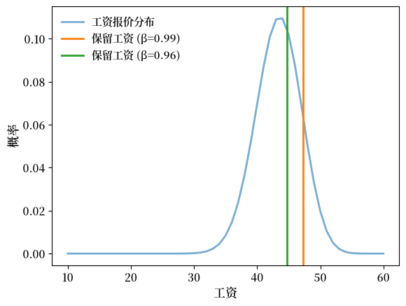
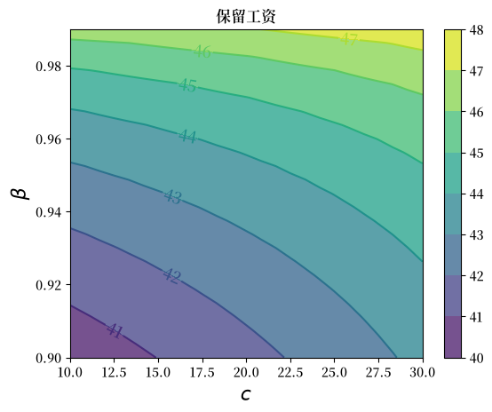
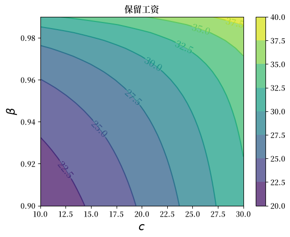
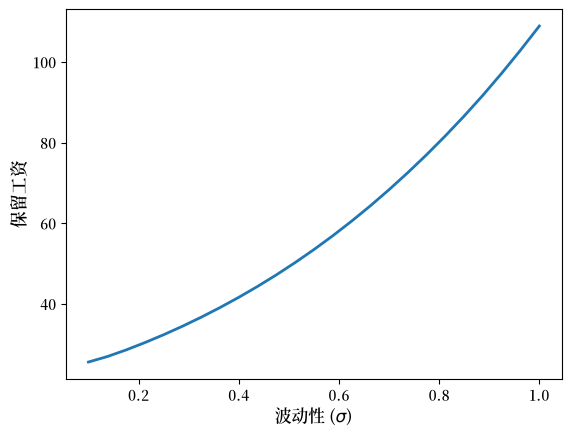
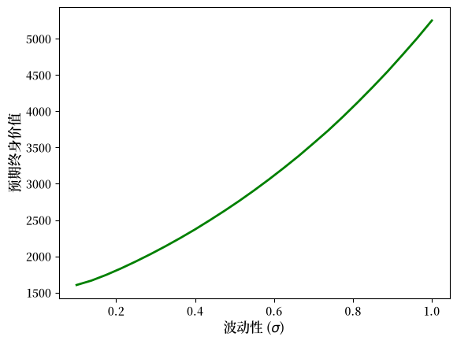
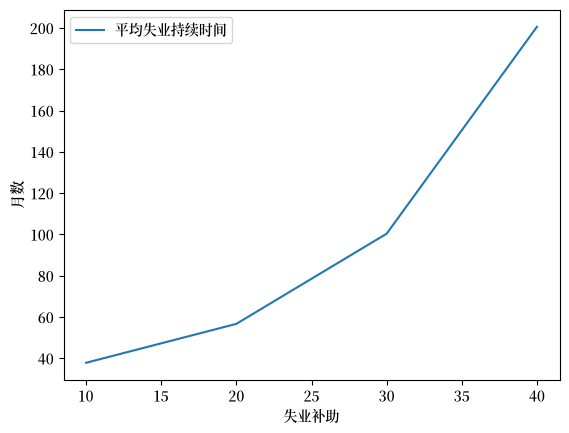

53. 工作搜寻 I: McCall搜寻模型#
GPU
本讲座是在配有GPU的机器上构建的——不过没有GPU也可以运行。
Google Colab 提供带GPU的免费套餐，使用方法如下：
点击右上角的”播放”图标
选择 Colab
将运行时环境设置为包含GPU
“询问一个McCall劳动者就像与一个失业的朋友对话：‘也许你的期望值定得太高了’，或者’为什么你在找到新工作之前就辞掉了原来的工作？’这就是真正的社会科学：试图通过观察人们所处的情况、他们面临的选择、以及他们自己所认为的优缺点来建模，以理解人类行为。” – 小罗伯特·卢卡斯
除了Anaconda中已有的内容外，本讲座还需要以下库：
!pip install quantecon jax
53.1. 概述#
McCall 搜索模型 [McCall, 1970] 帮助改变了经济学家思考劳动力市场的方式。
为了阐明”非自愿”失业等概念，McCall 从以下因素建模了失业劳动者的决策问题：
当前工资和可能的未来工资
耐心程度
失业补助
为了解决这个决策问题，McCall 使用了动态规划。
在本讲中，我们将建立 McCall 的模型并使用动态规划来分析它。
我们将看到，McCall 的模型不仅本身很有趣，而且是学习动态规划的绝佳载体。
让我们从一些导入开始：
import matplotlib.pyplot as plt
import matplotlib as mpl
FONTPATH = "fonts/SourceHanSerifSC-SemiBold.otf"
mpl.font_manager.fontManager.addfont(FONTPATH)
plt.rcParams['font.family'] = ['Source Han Serif SC']
import numpy as np
import numba
import jax
import jax.numpy as jnp
from typing import NamedTuple
from functools import partial
import quantecon as qe
from quantecon.distributions import BetaBinomial
53.2. McCall模型#
一个失业者在每个时期都会收到一个工资为\(W_t\)的工作机会。
在本讲中，我们采用以下简单环境：
工资序列\(\{W_t\}_{t \geq 0}\)是独立同分布的，其中\(q(w)\)是在有限集合\(\mathbb{W}\)中观察到工资\(w\)的概率。
失业者在\(t\)期的开始观察到\(W_t\)。
失业者知道\(\{W_t\}\)是具有共同分布\(q\)的独立同分布序列，并可以利用这一点计算期望值。
（在后续讲座中，我们将放宽这些假设。）
在时间\(t\)，失业者有两个选择：
接受工作机会，并以固定工资\(W_t\)永久工作。
拒绝工作机会，获得失业补助\(c\)，并在下一期重新考虑。
假设失业者具有无限长的生命，其目标是最大化折现收益总和的期望值
常数\(\beta\)位于\((0, 1)\)之间，被称为折现因子。
\(\beta\) 越小，失业者相对于当前收益越是折现未来收益。
变量 \(y_t\) 是收入，
当就业时，它等于工资 \(W_t\)
当失业时，它等于失业补助金 \(c\)
53.2.1. 权衡取舍#
劳动者面临一个权衡：
等待太久以获得好的工作机会是有代价的，因为未来会被折现。
过早接受工作机会也是有代价的，因为将来可能会出现更好的机会。
为了在这种权衡中做出最优决策，我们使用动态规划。
动态规划可以被视为一个两步骤的过程：
首先为”状态”赋值
然后根据这些值推导出最优行动
我们将依次讨论这些步骤。
53.2.2. 价值函数#
为了在当前和未来回报之间进行最优权衡，我们需要考虑两个方面：
不同选择带来的当前收益
这些选择在下一期会导致的不同状态
为了权衡决策问题的这两个方面，我们需要给状态赋予价值。
为此，让\(v^*(w)\)表示当工资为\(w \in \mathbb{W}\)时，一个失业劳动者在当前时期开始时进入失业状态所获得的总生命周期价值。
（具体来说，该失业者手中持有工资报价 \(w\)，可以选择接受或拒绝。）
更准确地说，\(v^*(w)\)表示的是当失业者始终以最优方式行事时，所能获得的预期折现收益总和。
当然，计算\(v^*(w)\)并不简单，因为我们还不知道哪些决策是最优的，哪些不是！
如果我们不知道哪些是最优选择，似乎就不可能计算出 \(v^*(w)\)。
但是让我们暂时把这个问题放在一边，将\(v^*\)看作一个函数，它为每个可能的工资\(w\)分配在持有该工作机会时可获得的最大终身价值 \(v^*(w)\)。
一个关键点是，这个函数\(v^*\)必须满足
对于 \(\mathbb{W}\) 中每一个可能的 \(w\) 都成立。
这是贝尔曼方程的一个版本，这个方程在经济动态学和其他涉及长期规划的领域中无处不在。
其背后的直观理解如下：
max运算中的第一项是接受当前工作机会的终身收益，因为这样一位劳动者将永远以工资 \(w\) 工作，并将这一收入流的价值评估为
max运算中的第二项是延续值，即拒绝当前工作机会并在随后所有时期做出最优行为的终身收益。
如果我们优化并从这两个选项中选出最好的一个，我们就能从今天开始、在当前工资报价 \(w\) 下获得最大终身价值。
而这恰恰就是 \(v^*(w)\)，即 (53.2) 的左边。
综上所述，我们看到 (53.2) 对所有 \(w\) 都成立。
53.2.3. 最优策略#
我们仍然不知道如何计算 \(v^*\)（尽管 (53.2) 给了我们一些提示，我们将在下面回到这一点）。
但现在假设我们确实知道 \(v^*\)。
一旦我们掌握了这个函数，我们就可以轻松做出最优选择（即在给定任意 \(w\) 的情况下，在接受和拒绝之间做出正确选择）。
我们只需要在(53.2)的右侧选择最大值即可。
换句话说，根据 \(v^*\) 为我们提供的信息，我们在停止和继续之间做出最佳选择。
最优行动最好被理解为一个策略，它通常是一个从状态到行动的映射。
对于任何\(w\)，我们都可以通过在(53.2)右侧选择最大值来得到相应的最佳选择（接受或拒绝）。
因此，我们有一个从\(\mathbb W\)到\(\{0, 1\}\)的映射，其中1表示接受，0表示拒绝。
我们可以将策略写作如下
这里\(\mathbf{1}\{ P \}\)在语句\(P\)为真时等于1，否则等于0。
我们也可以将其写作
其中
这里的 \(\bar w\)（称为保留工资）是一个取决于 \(\beta, c\) 和工资分布的常数。
失业者当且仅当当前工作机会的工资超过保留工资时接受该工作。
根据(53.3)，如果我们能计算出价值函数，就能计算出这个保留工资。
53.3. 计算最优策略：第一种方法#
为了将上述想法付诸实践，我们需要计算每个可能状态 \(w \in \mathbb W\) 下的价值函数。
为了简化符号，让我们设定
价值函数则由向量 \(v^* = (v^*(i))_{i=1}^n\) 表示。
根据(53.2)，这个向量满足如下非线性方程组
53.3.1. 算法#
为了计算这个向量，我们使用连续逼近法：
第1步：选择一个任意的初始猜测值 \(v \in \mathbb R^n\)。
第2步：通过以下方式计算新向量 \(v' \in \mathbb R^n\)
第3步：计算 \(v\) 和 \(v'\) 之间的差异度量，例如 \(\max_i |v(i)- v'(i)|\)。
第4步：如果偏差大于某个固定的容差，则令 \(v = v'\) 并返回第2步，否则继续。
第5步：返回 \(v\)。
对于较小的容差，返回的函数 \(v\) 是价值函数 \(v^*\) 的近似值。
下面的理论将详细说明这一点。
53.3.2. 不动点理论#
这个算法背后的数学原理是什么？
首先，通过以下方式定义从 \(\mathbb R^n\) 到自身的映射 \(T\)：
(通过在每个 \(i\) 处计算右侧的值，从给定向量 \(v\) 得到新向量 \(Tv\)。)
连续近似序列 \(\{v_k\}\) 中的元素 \(v_k\) 对应于 \(T^k v\)。
这是从初始猜测 \(v\) 开始，应用 \(k\) 次 \(T\) 的结果
可以证明，\(T\) 在 \(\mathbb R^n\) 上满足巴拿赫不动点定理的条件。
一个推论是 \(T\) 在 \(\mathbb R^n\) 中有唯一的不动点。
即存在唯一的向量 \(\bar v\) 使得 \(T \bar v = \bar v\)。
而且，从 \(T\) 的定义可以直接得出这个不动点就是 \(v^*\)。
巴拿赫收缩映射定理的第二个推论是，无论 \(v\) 取何值，序列 \(\{ T^k v \}\) 都会收敛到不动点 \(v^*\)。
53.3.3. 实现#
对于工资报价的分布 \(q\)，我们的默认选择是Beta-二项分布。
n, a, b = 50, 200, 100 # 默认参数
q_default = jnp.array(BetaBinomial(n, a, b).pdf())
我们的工资默认值设置为
w_min, w_max = 10, 60
w_default = jnp.linspace(w_min, w_max, n+1)
这是不同工资结果的概率分布图：
fig, ax = plt.subplots()
ax.plot(w_default, q_default, '-o', label='$q(w(i))$')
ax.set_xlabel('工资')
ax.set_ylabel('概率')
plt.show()
findfont: Failed to find font weight normal, now using 600.

我们将使用JAX来编写我们的代码。
我们将使用 NamedTuple 来构建模型类，以保持不可变性，这与 JAX 的函数式编程范式相契合。
以下是一个存储模型参数默认值的类。
class McCallModel(NamedTuple):
c: float = 25 # 失业补偿
β: float = 0.99 # 贴现因子
w: jnp.ndarray = w_default # 工资值数组，w[i] = 状态i下的工资
q: jnp.ndarray = q_default # 概率数组
我们实现来自 (53.6) 的贝尔曼算子 \(T\)，可以用数组运算写作
（max运算中的第一项是一个数组，第二项只是一个数字——这里我们的意思是，对该数组中的所有元素都逐个与这个数字进行max比较。）
我们可以按如下方式编写 \(T\)。
def T(model: McCallModel, v: jnp.ndarray):
c, β, w, q = model
accept = w / (1 - β)
reject = c + β * v @ q
return jnp.maximum(accept, reject)
基于这些默认值，让我们尝试绘制序列 \(\{ T^k v \}\) 中最初几个近似值函数。
我们将从猜测值 \(v\) 开始，其中 \(v(i) = w(i) / (1 - β)\)，这是在每个给定工资下都接受的价值。
model = McCallModel()
c, β, w, q = model
v = w / (1 - β) # 初始条件
fig, ax = plt.subplots()
num_plots = 6
for i in range(num_plots):
ax.plot(w, v, '-', alpha=0.6, lw=2, label=f"iterate {i}")
v = T(model, v)
ax.legend(loc='lower right')
ax.set_xlabel('工资')
ax.set_ylabel('价值')
plt.show()

你可以看到收敛的发生：连续的迭代值越来越接近。
这里有一个更严谨的迭代计算极限的方法，它会持续计算直到连续迭代之间的测量偏差小于tol。
一旦我们获得了对极限的良好近似，我们将用它来计算保留工资。
def compute_reservation_wage(
model: McCallModel, # 包含默认参数的实例
v_init: jnp.ndarray, # 迭代的初始条件
tol: float=1e-6, # 误差容限
max_iter: int=500, # 循环的最大迭代次数
):
"计算 McCall 工作搜寻模型中的保留工资。"
c, β, w, q = model
i = 0
error = tol + 1
v = v_init
while i < max_iter and error > tol:
v_next = T(model, v)
error = jnp.max(jnp.abs(v_next - v))
v = v_next
i += 1
w_bar = (1 - β) * (c + β * v @ q)
return v, w_bar
以下代码计算了默认参数下的保留工资
model = McCallModel()
c, β, w, q = model
v_init = w / (1 - β) # 初始猜测
v, w_bar = compute_reservation_wage(model, v_init)
print(w_bar)
47.316395
53.3.4. 比较静态分析#
现在我们知道如何计算保留工资，让我们来看看它如何随参数变化。
这里我们比较两个不同 \(\beta\) 值下的保留工资。
保留工资将与工资报价分布一起绘制，以便我们能够了解有多大比例的工作机会会被接受。
fig, ax = plt.subplots()
# 获取默认颜色循环
prop_cycle = plt.rcParams['axes.prop_cycle']
colors = prop_cycle.by_key()['color']
# 绘制工资报价分布
ax.plot(w, q, '-', alpha=0.6, lw=2,
label='工资报价分布',
color=colors[0])
# 使用默认 beta 计算保留工资
model_default = McCallModel()
c, β, w, q = model_default
v_init = w / (1 - β)
v_default, res_wage_default = compute_reservation_wage(
model_default, v_init
)
# 使用较低的 beta 计算保留工资
β_new = 0.96
model_low_beta = McCallModel(β=β_new)
c, β_low, w, q = model_low_beta
v_init_low = w / (1 - β_low)
v_low, res_wage_low = compute_reservation_wage(
model_low_beta, v_init_low
)
# 绘制保留工资的垂直线
ax.axvline(x=res_wage_default, color=colors[1], lw=2,
label=f'保留工资 (β={β})')
ax.axvline(x=res_wage_low, color=colors[2], lw=2,
label=f'保留工资 (β={β_new})')
ax.set_xlabel('工资', fontsize=12)
ax.set_ylabel('概率', fontsize=12)
ax.tick_params(axis='both', which='major', labelsize=11)
ax.legend(loc='upper left', frameon=False, fontsize=11)
plt.show()
findfont: Failed to find font weight normal, now using 600.
findfont: Failed to find font weight normal, now using 600.

我们看到，当 \(\beta\) 越高时，保留工资也越高。
这并不奇怪，因为更高的 \(\beta\) 意味着更有耐心。
现在让我们更系统地看看当我们改变\(\beta\)和\(c\)时会发生什么。
作为第一步，鉴于我们将多次使用它，让我们创建一个更高效、经过即时编译的版本，用于计算保留工资：
@jax.jit
def compute_res_wage_jitted(
model: McCallModel, # 包含默认参数的实例
v_init: jnp.ndarray, # 迭代的初始条件
tol: float=1e-6, # 误差容限
max_iter: int=500, # 循环的最大迭代次数
):
c, β, w, q = model
i = 0
error = tol + 1
initial_state = v_init, i, error
def cond(loop_state):
v, i, error = loop_state
return jnp.logical_and(i < max_iter, error > tol)
def update(loop_state):
v, i, error = loop_state
v_next = T(model, v)
error = jnp.max(jnp.abs(v_next - v))
i += 1
new_loop_state = v_next, i, error
return new_loop_state
final_state = jax.lax.while_loop(cond, update, initial_state)
v, i, error = final_state
w_bar = (1 - β) * (c + β * v @ q)
return v, w_bar
现在我们计算每一对 \(c, \beta\) 下的保留工资。
grid_size = 25
c_vals = jnp.linspace(10.0, 30.0, grid_size)
β_vals = jnp.linspace(0.9, 0.99, grid_size)
res_wage_matrix = np.empty((grid_size, grid_size))
model = McCallModel()
v_init = model.w / (1 - model.β)
for i, c in enumerate(c_vals):
for j, β in enumerate(β_vals):
model = McCallModel(c=c, β=β)
v, w_bar = compute_res_wage_jitted(model, v_init)
v_init = v
res_wage_matrix[i, j] = w_bar
fig, ax = plt.subplots()
cs1 = ax.contourf(c_vals, β_vals, res_wage_matrix.T, alpha=0.75)
ctr1 = ax.contour(c_vals, β_vals, res_wage_matrix.T)
plt.clabel(ctr1, inline=1, fontsize=13)
plt.colorbar(cs1, ax=ax)
ax.set_title("保留工资")
ax.set_xlabel("$c$", fontsize=16)
ax.set_ylabel("$β$", fontsize=16)
ax.ticklabel_format(useOffset=False)
plt.show()
findfont: Failed to find font weight normal, now using 600.
findfont: Failed to find font weight normal, now using 600.
findfont: Failed to find font weight normal, now using 600.

如预期所示，保留工资随着耐心程度和失业补助的增加而增加。
53.4. 计算最优策略：方法二#
刚才描述的动态规划方法是标准且广泛适用的。
但对于我们的McCall搜索模型来说，还有一个更简单的方法，可以避免计算价值函数。
让 \(h\) 表示延续值：
贝尔曼方程现在可以写作
现在让我们单独推导一个只关于 \(h\) 的非线性方程。
从 (53.9) 出发，我们将两边同时乘以 \(q(w')\)，得到
接下来，我们对两边在 \(w' \in \mathbb{W}\) 上求和：
现在两边同时乘以 \(\beta\)：
两边同时加上 \(c\)：
最后，根据 (53.8) 中 \(h\) 的定义，左边恰好就是 \(h\)，于是我们得到
这是一个关于单一标量 \(h\) 的非线性方程，我们可以求解 \(h\)。
和之前一样，我们将使用连续近似法：
第1步：选择一个初始猜测值 \(h\)。
第2步：通过以下公式计算更新值 \(h'\)
第3步：计算偏差 \(|h - h'|\)。
第4步：如果偏差大于某个固定的容差，则设置 \(h = h'\) 并返回第2步，否则返回 \(h\)。
我们可以再次使用巴拿赫不动点定理来证明这个过程总是收敛的。
然而，这里的重大区别在于：我们现在是对单个标量 \(h\) 进行迭代，而不是像之前那样对 \(n\) 维向量 \(v(i), i = 1, \ldots, n\) 进行迭代。
以下是实现代码：
def compute_reservation_wage_two(
model: McCallModel, # 包含默认参数的实例
tol: float=1e-5, # 误差容限
max_iter: int=500, # 循环的最大迭代次数
):
c, β, w, q = model
h = (w @ q) / (1 - β) # 初始条件
i = 0
error = tol + 1
initial_loop_state = i, h, error
def cond(loop_state):
i, h, error = loop_state
return jnp.logical_and(i < max_iter, error > tol)
def update(loop_state):
i, h, error = loop_state
s = jnp.maximum(w / (1 - β), h)
h_next = c + β * (s @ q)
error = jnp.abs(h_next - h)
i_next = i + 1
new_loop_state = i_next, h_next, error
return new_loop_state
final_state = jax.lax.while_loop(cond, update, initial_loop_state)
i, h, error = final_state
# 计算并返回保留工资
return (1 - β) * h
你可以使用以上代码来完成下面的练习。
53.5. 连续工资报价分布#
上面使用的离散工资报价分布对理论和计算都很方便，但许多现实的分布是连续的（即具有密度函数）。
幸运的是，当我们转向连续工资报价分布时，我们这个简单模型中的理论变化很小。
回想一下，(53.8)中的\(h\)表示在本期不接受工作但在随后所有期间表现最优的价值。
要转换为连续分布，我们可以用以下式子替换(53.8)：
方程(53.10)变为：
目标是通过迭代求解这个非线性方程，并从中得到保留工资。
53.5.1. 使用对数正态工资分布的实现#
让我们实现这样一种情况：
状态序列 \(\{ s_t \}\) 为独立同分布的标准正态分布，且
工资函数为 \(w(s) = \exp(\mu + \sigma s)\)。
这为我们提供了对数正态工资分布。
我们通过蒙特卡洛积分来计算积分，即对大量工资抽样进行平均。
对于默认参数，使用 c=25, β=0.99, σ=0.5, μ=2.5。
class McCallModelContinuous(NamedTuple):
c: float # 失业补偿
β: float # 贴现因子
σ: float # 对数正态分布的尺度参数
μ: float # 对数正态分布的位置参数
w_draws: jnp.ndarray # 蒙特卡洛的工资抽样
def create_mccall_continuous(
c=25, β=0.99, σ=0.5, μ=2.5, mc_size=1000, seed=1234
):
key = jax.random.PRNGKey(seed)
s = jax.random.normal(key, (mc_size,))
w_draws = jnp.exp(μ + σ * s)
return McCallModelContinuous(c, β, σ, μ, w_draws)
@jax.jit
def compute_reservation_wage_continuous(model, max_iter=500, tol=1e-5):
c, β, σ, μ, w_draws = model
h = jnp.mean(w_draws) / (1 - β) # 初始猜测
def update(state):
h, i, error = state
integral = jnp.mean(jnp.maximum(w_draws / (1 - β), h))
h_next = c + β * integral
error = jnp.abs(h_next - h)
return h_next, i + 1, error
def cond(state):
h, i, error = state
return jnp.logical_and(i < max_iter, error > tol)
initial_state = (h, 0, tol + 1)
final_state = jax.lax.while_loop(cond, update, initial_state)
h_final, _, _ = final_state
# 现在计算保留工资
return (1 - β) * h_final
现在让我们通过等值线图来研究保留工资如何随 \(c\) 和 \(\beta\) 变化。
grid_size = 25
c_vals = jnp.linspace(10.0, 30.0, grid_size)
β_vals = jnp.linspace(0.9, 0.99, grid_size)
def compute_R_element(c, β):
model = create_mccall_continuous(c=c, β=β)
return compute_reservation_wage_continuous(model)
# 首先，对 β 进行向量化（固定 c）
compute_R_over_β = jax.vmap(compute_R_element, in_axes=(None, 0))
# 接下来，对 c 进行向量化（将上述函数应用于每个 c）
compute_R_vectorized = jax.vmap(compute_R_over_β, in_axes=(0, None))
# 应用以计算整个网格
R = compute_R_vectorized(c_vals, β_vals)
fig, ax = plt.subplots()
cs1 = ax.contourf(c_vals, β_vals, R.T, alpha=0.75)
ctr1 = ax.contour(c_vals, β_vals, R.T)
plt.clabel(ctr1, inline=1, fontsize=13)
plt.colorbar(cs1, ax=ax)
ax.set_title("保留工资")
ax.set_xlabel("$c$", fontsize=16)
ax.set_ylabel("$β$", fontsize=16)
ax.ticklabel_format(useOffset=False)
plt.show()

正如离散情形一样，保留工资随着耐心程度和失业补助的增加而增加。
53.6. 波动性#
McCall 模型的一个有趣特征是，工资报价的波动性增加往往会提高保留工资。
其直觉在于，波动性对劳动者是有吸引力的，因为他们可以享受上行空间（高工资报价），同时拒绝下行空间（低工资报价）。
因此，随着波动性的增加，劳动者更愿意继续搜寻而不是接受给定的工作机会，这意味着保留工资会上升。
为了说明这一现象，我们使用工资分布的均值保持扩散（mean-preserving spread）。
具体来说，我们改变对数正态工资分布 \(w(s) = \exp(\mu + \sigma s)\) 中的尺度参数 \(\sigma\)，同时调整 \(\mu\) 以保持均值不变。
回想一下，对于参数为 \(\mu\) 和 \(\sigma\) 的对数正态分布，其均值为 \(\exp(\mu + \sigma^2/2)\)。
为了将均值保持在某个值 \(m\) 不变，我们需要：
让我们实现这一点，并计算不同 \(\sigma\) 值下的保留工资：
# 固定平均工资
mean_wage = 20.0
# 创建一系列波动性数值
σ_vals = jnp.linspace(0.1, 1.0, 25)
# 给定 σ，计算 μ 以维持均值不变
def compute_μ_for_mean(σ, mean_wage):
return jnp.log(mean_wage) - (σ**2) / 2
# 计算每个波动性水平下的保留工资
res_wages_volatility = []
for σ in σ_vals:
μ = compute_μ_for_mean(σ, mean_wage)
model = create_mccall_continuous(σ=float(σ), μ=float(μ))
w_bar = compute_reservation_wage_continuous(model)
res_wages_volatility.append(w_bar)
res_wages_volatility = jnp.array(res_wages_volatility)
现在让我们绘制保留工资作为波动性的函数：
fig, ax = plt.subplots()
ax.plot(σ_vals, res_wages_volatility, linewidth=2)
ax.set_xlabel(r'波动性 ($\sigma$)', fontsize=12)
ax.set_ylabel('保留工资', fontsize=12)
plt.show()
findfont: Failed to find font weight normal, now using 600.

正如预期的那样，保留工资随 \(\sigma\) 的增加而增加。
53.6.1. 终身价值与波动性#
我们已经看到保留工资随波动性增加而增加。
同样的情况也适用于最大终身价值——它也随波动性增加而增加。
更高的波动性提供了更大的上行潜力，与此同时劳动者可以通过拒绝低工资报价来保护自己免受下行风险的影响。
这种期权价值转化为更高的预期终身效用。
为了证明这一点，我们将：
计算每个波动性水平下的保留工资
利用蒙特卡洛方法，计算与该保留工资相关的终身收入流的预期折现价值。
模拟过程如下：
根据给定的工资路径，计算一条终身收入路径的现值。
对大量这样的计算取平均值，以近似预期折现价值。
我们将每条路径截断在 \(T=100\) 处，这为我们的目的提供了足够的分辨率。
@jax.jit
def simulate_lifetime_value(key, model, w_bar, n_periods=100):
"""
模拟工资路径的一次实现，并计算终身价值。
参数：
-----------
key : jax.random.PRNGKey
JAX 的随机密钥
model : McCallModelContinuous
包含参数的模型
w_bar : float
保留工资
n_periods : int
模拟的期数
返回：
--------
lifetime_value : float
n_periods 期内收入的折现总和
"""
c, β, σ, μ, w_draws = model
# 提前抽取所有工资报价
key, subkey = jax.random.split(key)
s_vals = jax.random.normal(subkey, (n_periods,))
wage_offers = jnp.exp(μ + σ * s_vals)
# 确定哪些报价是可以接受的
accept = wage_offers >= w_bar
# 追踪就业状态：从第一次接受起进入就业状态
employed = jnp.cumsum(accept) > 0
# 获取被接受的工资（accept 为 True 的第一个工资）
first_accept_idx = jnp.argmax(accept)
accepted_wage = wage_offers[first_accept_idx]
# 每期的收入：就业时为 accepted_wage，失业时为 c
earnings = jnp.where(employed, accepted_wage, c)
# 计算折现总和
periods = jnp.arange(n_periods)
discount_factors = β ** periods
lifetime_value = jnp.sum(discount_factors * earnings)
return lifetime_value
@jax.jit
def compute_mean_lifetime_value(model, w_bar, num_reps=10000, seed=1234):
"""
计算多次模拟中的平均终身价值。
"""
key = jax.random.PRNGKey(seed)
keys = jax.random.split(key, num_reps)
# 对所有重复模拟进行向量化
simulate_fn = jax.vmap(simulate_lifetime_value, in_axes=(0, None, None))
lifetime_values = simulate_fn(keys, model, w_bar)
return jnp.mean(lifetime_values)
现在让我们计算每个波动性水平下的预期终身价值：
# 使用相同的波动性范围和平均工资
σ_vals = jnp.linspace(0.1, 1.0, 25)
mean_wage = 20.0
lifetime_vals = []
for σ in σ_vals:
μ = compute_μ_for_mean(σ, mean_wage)
model = create_mccall_continuous(σ=σ, μ=μ)
w_bar = compute_reservation_wage_continuous(model)
lv = compute_mean_lifetime_value(model, w_bar)
lifetime_vals.append(lv)
让我们将预期终身价值作为波动性的函数进行可视化：
fig, ax = plt.subplots()
ax.plot(σ_vals, lifetime_vals, linewidth=2, color='green')
ax.set_xlabel(r'波动性 ($\sigma$)', fontsize=12)
ax.set_ylabel('预期终身价值', fontsize=12)
plt.show()

该图证实，尽管劳动者在面对波动性更高的工资报价时会设定更高的保留工资（如上所示），但由于搜寻的期权价值，他们所获得的预期终身价值反而更高。
53.7. 练习#
练习 53.1
当 \(\beta=0.99\) 且 \(c\) 取以下值时，计算失业的平均持续时间
c_vals = np.linspace(10, 40, 4)
也就是说，让失业者从失业状态开始，根据给定参数计算其保留工资，然后模拟看需要多长时间才能接受工作。
重复多次并取平均值。
绘制平均失业持续时间与 c_vals 中的 \(c\) 值的函数关系图。
尝试解释你所看到的结果。
解答 练习 53.1
以下是使用 JAX 结合连续工资报价分布的参考答案。
def compute_stopping_time_continuous(w_bar, key, model):
"""
通过从连续分布中抽取工资，直到某个工资超过 `w_bar` 为止，
来计算停止时间。
参数：
-----------
w_bar : float
保留工资
key : jax.random.PRNGKey
JAX 的随机密钥
model : McCallModelContinuous
包含工资抽样的模型
返回：
--------
t_final : int
停止时间（接受工作前所经历的期数）
"""
c, β, σ, μ, w_draws = model
def update(loop_state):
t, key, accept = loop_state
key, subkey = jax.random.split(key)
# 抽取一个标准正态分布值并转换为工资
s = jax.random.normal(subkey)
w = jnp.exp(μ + σ * s)
accept = w >= w_bar
t = t + 1
return t, key, accept
def cond(loop_state):
_, _, accept = loop_state
return jnp.logical_not(accept)
initial_loop_state = (0, key, False)
t_final, _, _ = jax.lax.while_loop(cond, update, initial_loop_state)
return t_final
def compute_mean_stopping_time_continuous(w_bar, model, num_reps=100000, seed=1234):
"""
在 `num_reps` 次重复中生成平均停止时间。
参数：
-----------
w_bar : float
保留工资
model : McCallModelContinuous
包含参数的模型
num_reps : int
模拟重复的次数
seed : int
随机种子
返回：
--------
mean_time : float
所有重复中的平均停止时间
"""
# 为每次蒙特卡洛重复生成一个密钥
key = jax.random.PRNGKey(seed)
keys = jax.random.split(key, num_reps)
# 对 compute_stopping_time_continuous 进行向量化，并在所有密钥上进行评估
compute_fn = jax.vmap(compute_stopping_time_continuous, in_axes=(None, 0, None))
obs = compute_fn(w_bar, keys, model)
# 返回平均停止时间
return jnp.mean(obs)
# 计算不同 c 值下的平均停止时间
c_vals = jnp.linspace(10, 40, 4)
@jax.jit
def compute_stop_time_for_c_continuous(c):
"""计算给定失业补助值 c 下的平均停止时间。"""
model = create_mccall_continuous(c=c)
w_bar = compute_reservation_wage_continuous(model)
return compute_mean_stopping_time_continuous(w_bar, model)
# 对所有 c 值进行向量化
compute_stop_time_vectorized = jax.vmap(compute_stop_time_for_c_continuous)
stop_times = compute_stop_time_vectorized(c_vals)
fig, ax = plt.subplots()
ax.plot(c_vals, stop_times, label="平均失业持续时间")
ax.set(xlabel="失业补助", ylabel="月数")
ax.legend()
plt.show()
